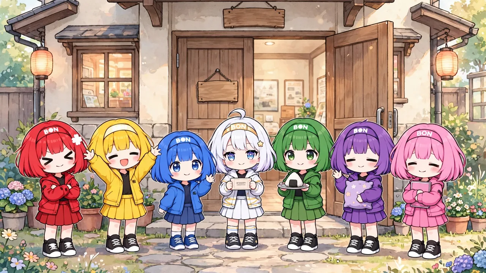

GUIDE
はじめての方へ・FAQ

BON MUSEUMとは
BON MUSEUMは、ボンちゃんが ひとりで 運営している 創作ブランド「BON CREATIONS」の、ちいさな 博物館だよ。ゲーム・音楽・イラスト・小説など、いろいろな 作品を 展示しているよ。
ボン界とは
ボンたちが暮らす世界の名前は「ボン界」。人間の世界とは別の世界で、住人はみんな二頭身だよ。
- 学校・会社・病院・お店・電車・インターネットなど、現実とよく似たものがある。
- 時間の流れは、人間の世界と同じ。
- ボンならではの文化や決まりもある。
ボンって だれ？
ボンは、人間の感情や願いが、想像力で形になって生まれる種族だよ。赤ちゃんとして生まれるわけじゃなくて、森や街に、とつぜんあらわれる。
- ひょえボンは、びっくりすると、目が「○」、口が「△」の「○△○」の顔になる。
- びっくりすると「ボン！？」、しょんぼりすると「しょボン……」、ごはんの前では「ボーン！」と声が出る。
- ボンは、見た目はずっと変わらないけれど、ちゃんと成長する。
ボンたちの 紹介
ボンの 成長について
成長は、見た目ではなく、しぐさ・言葉づかい・できることでわかるよ。段階は7つ。
7つの 段階を くわしく 見る
- ほやほやボン期：乳幼児期。話せるのは「ボン」だけ。
- ちびボン期：幼児期。ひらがな中心の話し方で、自分を名前で呼ぶ。
- のびのびボン期：学童期。自分を「ぼく」「わたし」と呼ぶ。簡単な料理やおつかいができる。
- きらきらボン期：青年期(人間でいう中高生ベース)。得意を見つけて、バイトで試す。
- おとなボン期：成人期。得意を仕事にして、自分の場所を見つける。
- べてらんボン期：中年期。まわりを支える側になる。
- おだやかボン期：老年期。まわりの相談相手になる。
段階が進んだときは、みんなで「お赤飯の日」をお祝いするよ。いまの7人は、ひょえボンがのびのびボン期、ほかの6人がきらきらボン期。
何が できるの？
- ずかん：ボンたちの プロフィールを 見られるよ。
- ボンたちと おしゃべり：ボンと 会話が できるよ。
- ゲーム：ブラウザで 無料で あそべるよ。
- 小説・ミュージック・ギャラリー：ボンたちの 作品を たのしめるよ。
- 壁紙・アイコン・配布：もらえる ものが あるよ。
- せかいかん：ボン界の くわしい 設定を 読めるよ。
こんな ときは、ここへ
- ボンたちについて 知りたい → ずかん・せかいかん
- ボンたちと おしゃべり したい → ボンたちと おしゃべり
- ゲームで あそびたい → ゲーム
- 小説や ものがたりを 読みたい → ものがたり
- 音楽を 聴きたい → ミュージック
- イラストや 壁紙を 見たい・もらいたい → ギャラリー・壁紙・アイコン・配布
- 制作の 裏側を 知りたい → 制作の 裏側・つくった ひみつ ばなし
おすすめの 楽しみ方
じゅんばんに めぐりたい
博物館ガイドツアー(トップの「はじめての方へ」と おなじ 3つの 楽しみ方が、ここに まとまっているよ)
ほかの ページも 見てみよう
BON CREATIONSの ゲーム、音楽、キャラクター、創作活動などについて、よくある しつもんと こたえを まとめたよ。しつもんを タップすると、こたえが ひらくよ。
その ことばに あてはまる しつもんは、まだ ないよ。べつの ことばで さがしてみてね。
博物館の 使いかたについて
会員登録は 必要？
いらないよ。会員登録や ログインの しくみは ないから、そのまま 見られるよ。
利用料金は かかる？
かからないよ。ゲームも サイトも 無料だよ。
海外からも 利用できる？
できるよ。インターネットが あれば 見られるよ。
サイトが うまく 表示されない ときは？
ページを 再読み込みして みてね。それでも 直らない ときは、Xで 教えてね。
BON CREATIONSについて
BON CREATIONSは 会社なの？
BON CREATIONSは、ボンちゃんが ひとりで 運営している 創作ブランドだよ。ゲーム・音楽・イラスト・小説など、いろいろな 作品を つくって、公開しているよ。
ボンちゃんと、さくしゃボンは、おなじ人？
ボンちゃんは、作っている 人の なまえ(クリエイター名義)だよ。さくしゃボンは、ボンちゃんを モデルにした、作品の 中の キャラクター。BON CREATIONSは、活動の ブランド名だよ。
「ボンちゃん」って 呼んでいい？
ボンちゃんは、作っている 人の なまえ(あだ名)だよ。気軽に 呼んでね！ ボン界の ボンたちは、なまえの ある 子を「○○ボン」と 呼んでね。
ひとりで つくっているの？
企画から 運営まで、ぜんぶ ボンちゃんひとりだよ。AIなどの ツールの 力も かりているよ。
これから 新しい 作品は ふえる？
うん。新しい ゲームや 音楽、イラストなどを、これからも つくって 公開していく つもりだよ。
ゲームについて
ゲームは、むりょうで あそべる？
ぜんぶ 無料で あそべるよ。
ゲームの ダウンロードは 必要？
ダウンロードは いらないよ。ブラウザで、そのまま あそべるよ。ぜんぶ 無料だよ。ゲーム一覧から どうぞ。
スマホでも あそべる？
スマホでも パソコンでも、ブラウザで あそべるよ。ホーム画面に 追加して、アプリのように つかえる ゲームも あるよ。ゲーム一覧の「アプリ化できるよ！」の タグが めじるし。ゲームごとに ちがうところも あるから、くわしくは 各ゲームの 紹介を 見てね。
セーブは できる？ とちゅうで ページを 閉じても 大丈夫？
ゲーム一覧に「セーブあり」と 書いてある ゲームは、とちゅうで ページを 閉じても つづきから あそべるよ。ほかの ゲームは、はじめから やり直しに なるよ。ゲームごとに しくみが ちがうから、各ゲームの 説明も 見てね。
ゲームの 実況や 配信を しても いい？
OK! たのしんで 実況・配信してね。ゲームごとに 注意書きが ある ときは、そちらも 見てね。
ゲーム一覧の「公開中」「試作版」「制作中」「更新中」「開発完了」って？
公開中=いま あそべるゲームだよ。試作版=ためしに 作った版で、あそべるけど まだ とちゅうだよ。制作中=まだ あそべない ゲームだよ。更新中=さくしゃボンが まんぞくするまで アップデートを つづけているよ。開発完了=自分からは アップデートしないけど、リクエストが あれば 更新するよ。
バグを みつけたら？
ページの いちばん下の「ひとこと おくる」から、Xで おしらせしてね。どんな ときに 起きたかや、画面の スクリーンショットが あると、原因を 調べやすくて たすかるよ。
博物館を ホーム画面に 入れられる？
ホーム画面に 追加すると、アプリのように ひらけるよ。「もどる」や「更新」の ボタンも 出るよ。
来館きろくや お気に入りは、どこに のこるの？
この 端末の ブラウザの 中だけに 保存されるよ。ほかの 端末とは 共有されないよ。くわしくは じぶんの きろくを 見てね。
「今日の ボン」や「今週の おすすめ」は、いつ かわるの？
「今日の ボン」は 1日ごとに、「今週の おすすめ」は 1週間ごとに かわるよ。トップで 見られるよ。
さがしたい ページが あるときは？
ページの 上の 虫めがねの ボタンから、さがすページで さがせるよ。
季節の イベントは、どこで 見られるの？
きせつ ごよみで 見られるよ。
「ボンの おへや」って なに？
7人の ボンが くらす おへやを のぞけるよ。ごはんや おやつを あげたり、ふれあったり、ボンどうしの おしゃべりを みたり できるよ。ひょえボンの へやには、ごっこあそびの「ぷに」も いるよ。ボンの おへやから どうぞ。
おへやの きろくは、どこに のこるの？
この 端末の ブラウザの 中だけに 保存されるよ。ほかの 端末とは 共有されないし、さくしゃボンにも とどかないよ。まえの「ぷにを そだてる」や「なでなで」の きろくも、そのまま つづきから つかえるよ。
ぷにって ボンなの？
ボンでは ないよ。ひょえボンが ねんどで つくった ましゅこっとで、ひょえボンの「ぷにごっこ」の あいてだよ。うごいたり しゃべったり しないけど、ひょえボンが ぷにの かわりに こえを つけて あそんでいるよ。ぷにごっこ
天気の きのうで、いばしょや 天気は 作者に 送られる？
送られないよ。いばしょは、天気を しらべる Open-Meteo という サービスに だけ 送って いて、さくしゃボンには とどかないよ。
キャラクターについて
ボンちゃんたちは、どんな キャラクター？
ボンちゃんたちは、人間の 想像力から うまれた 精霊たちだよ。それぞれ ちがう 性格と 個性を もっているよ。
ボンたちは、なんにん いるの？
おなじ家で くらす 7人の ボン(おこ・にこ・ひょえ・もぐ・ねむ・てれ・にじ)と、さくしゃボンだよ。くわしくは「ボンたちの ずかん」を 見てね。
ボンたちに 性別は ある？
あるよ。ボンの 性別は、元になった 人間の 性別で 決まるよ。かみや ふくの 色は、性別とは 関係なくて、元になった 感情の イメージ色で 決まるよ。くわしくは せかいかんを 見てね。
さくしゃボンと 7人の ボンの 関係は？
イラスト・おはなし・ファンアートを 作って、公開しても いい？ (SNS・動画・転載)
二次創作は OK! ボンたちを すきに かいたり、おはなしに してくれて いいよ。ファンアートの 公開も、動画や SNSへの 投稿も OK。公式の 作品と まちがえられない 形で 公開してね。作ったら、ボンちゃんに 教えるか メンションしてくれると うれしいな。紹介させてもらった ものは、このサイトに のせるかも しれないよ。
ボンたちの 絵や ゲーム画面を SNSに のせる ときは「© BON CREATIONS」や リンクを つけてね。
無断転載や 自作発言は、しないでね。作品を 紹介する ときは、このサイトや 公式SNSの リンクを つかってね。
くわしくは 「使っても いい もの・だめな もの」を 見てね。
ボンの グッズは、あるの？
まだ ないよ。これからの 目標なんだ。ひょえボンの ぬいぐるみが ほしいな。
小説は、どれから よめばいい？
「ひょえボンの はじめての おうち」(1話)から じゅんばんに よむのが おすすめだよ。「読む順番と じかんの ながれ」の ページも 見てね。
オリジナルの ボンを 考えても いい？
OK! 公式の ボンと まちがえられない 形で 考えてね。ただし、ボンたち自身の 設定は 使わないでね。
ボンたちの 設定を 参考に しても いい？
ごえんりょ ください。ボンたちの 設定は、ボンちゃん独自の ものだよ。二次創作で ボンたちを かく ことは OKだよ。
音楽について
音楽は どこで 聴けるの？
YouTubeに あげているよ。このサイトの ミュージックの ページからも 聴けるよ。
音楽は つかっても いい？ (動画・ダウンロード・アレンジ)
基本は、聴いて たのしんでね。YouTubeに あげている 曲は、ポートフォリオの かわりだから、販売は しないよ。曲の 制作の 依頼は、うけつけているよ。個人の 動画・収益化した 動画・ゲーム配信での 利用、再配布、曲の 加工・アレンジ、商用利用は、どれも 先に Xなどで 相談してね。YouTubeの 楽曲を 動画に 使う ときや、楽曲の ダウンロード、アレンジ・リミックスの 公開も、先に Xなどで ごそうだん ください。ミュージックの ページも 見てね。
音楽の 制作依頼は できる？
うけつけているよ。Xなどで 相談してね。
AI・制作について
AIは つかっているの？ AIだけで つくっているの？
うん、AIを 制作の 補助ツールとして つかっているよ。画像・音楽・文章・プログラミングなど、つくる ものに 合わせて、いろいろな AIツールを つかっているよ。でも、AIだけで つくっているわけじゃ ないよ。企画や アイデア、方向性の 決定、作品の 構成や 演出などは、ボンちゃんが 担当して、企画・演出・編集・調整を して、作品を 完成させているよ。
著作権・利用について
- 個人で たのしむ OK。壁紙・アイコンなどを 自分で 使うのは 自由だよ。
- SNSで 紹介する OK。「© BON CREATIONS」と リンクを つけてね。
- 動画・配信で 使う ゲームの 実況・配信は OK。音楽を 動画に 使う ときは、先に Xなどで ごそうだん。
- 二次創作を 公開する OK。公式と まちがえられない 形で、できれば 教えてね。
- 商用利用する ボンたちの 絵や 設定を 使った 販売は ごえんりょ。音楽は 先に ごそうだん。
- グッズを つくる・売る ごえんりょ ください。
- 無断転載・自作発言 しないでね。
壁紙や 写真は、使っても いい？
「使っても いい もの・だめな もの」を 見てね。
ボンたちの 絵や 設定で、販売や グッズ作りを しても いい？
ごえんりょ ください。ボンたちの 絵や 設定を つかった 販売や グッズ作りは、しないでね。
お問い合わせについて
- 感想・リクエスト X(@BON_CREATIONS)・Instagram(@bon__creations)・「ひとこと おくる」。
- ゲームの ふぐあい 「ひとこと おくる」から Xで。どんな ときに 起きたかや スクリーンショットが あると たすかるよ。
- 音楽・制作の 依頼 Xなどで 相談してね。
- 著作権・使いかたの しつもん Xで 相談してね。
- その ほか X・Instagramで 受けつけているよ。
感想や リクエストは、どこに おくれる？
X(@BON_CREATIONS)や Instagram(@bon__creations)で 受けつけているよ。「つくった ひと」の いちばん下の「ひとこと おくる」からも おくれるよ。「こんな ゲームで あそびたい！」も 大かんげい。
新しい 作品の じょうほうは、どこで わかる？
この博物館の「更新のきろく」と、X・Instagramで おしらせしているよ。
BON CREATIONSへの 参加や コラボは できる？
いまは ボンちゃんひとりで やっているよ。相談は Xで してね。